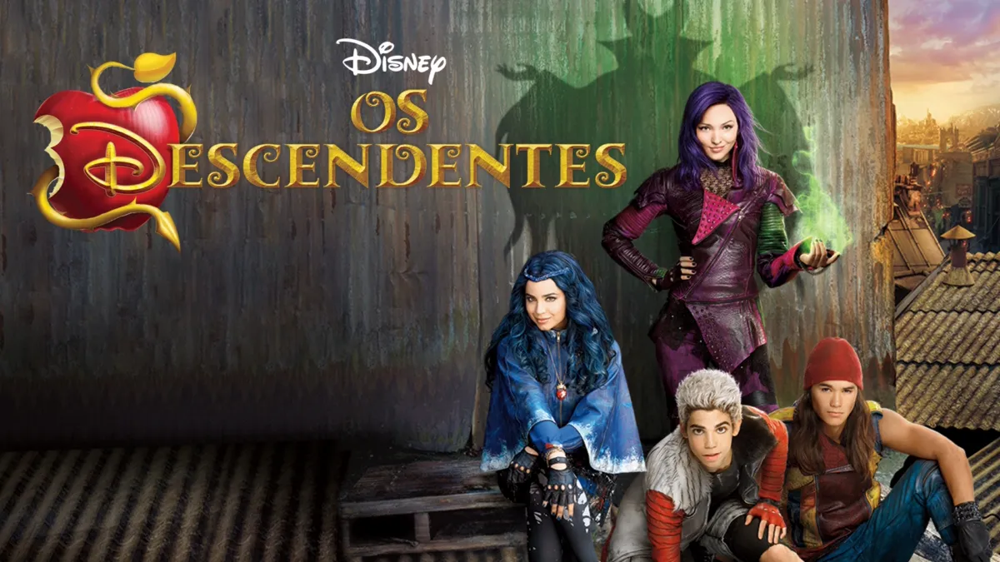
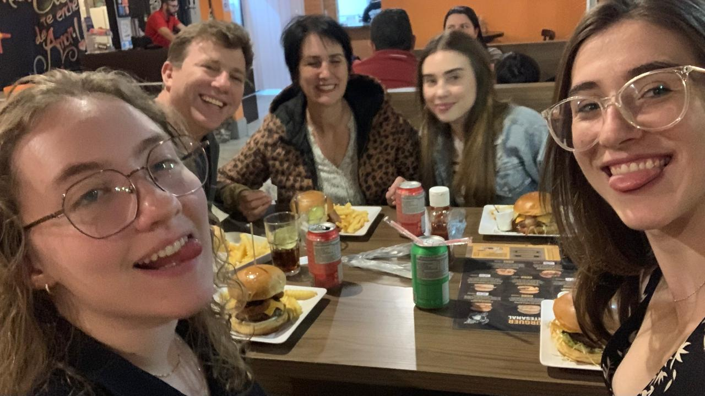
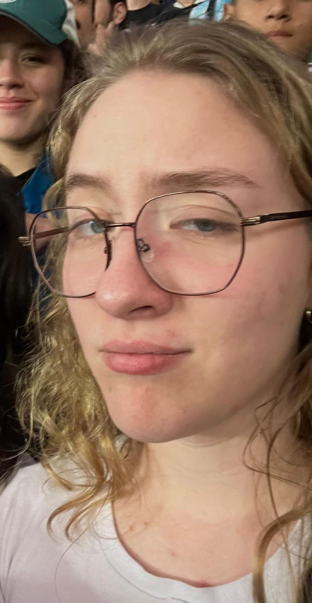

Helenis
FILMES
MELHOR FILME DO MUNDO.
Amigas unidas jamais seram vencidas, engraçado, humor ácido, MELHOREs MASHUPS QUE EU JÁ VI e muitos altos e baixos
Perfeito Tudo. Personagens, falas, roupas, trilha sonora e etc.

Referências, brega, músicas boas e emoções.
Não precisa de justificativa.
MÚSICA
Dancing Queen - ABBA
Dona de mim - IZA
Count me out - Kendrick Lammar
One Last Time - Ariana Grande
COMIDA
Maravilhoso, pode pegar um por um, vários tipos de massa e molhos.
Para qualquer hora.
Não tem erro, bom até no verão. E dá para fazer Capeletti com molho
Mais sobre Helena


Família
Intereses
Redes Sociais